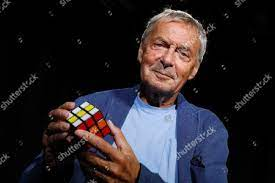
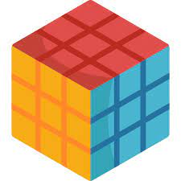

Como e por que surgiu?
Cubo Mágico, também conhecido como Cubo de Rubik, é um quebra-cabeça tridimensional, inventado pelo professor de arquitetura húngaro Ernő Rubik em 1974.
O objetivo era criar uma peça que fosse perfeita em relação à geometria, para ajudar a ilustrar o conceito de terceira dimensão aos seus alunos de arquitetura.

Popularização
O primeiro protótipo do cubo foi fabricado em 1974 quando Ernő Rubik era professor do Departamento de Desenho de Interiores da Academia de Artes e Trabalhos Manuais Aplicados de Budapeste, Hungria.

Os primeiros lotes do Cubo Mágico foram produzidos no final de 1977 e lançados em lojas de brinquedo em Budapeste. Com a permissão de Rubik, o empresário Tibor Laczi levou um dos cubos para a Nuremberg Toy Fair, na Alemanha, em fevereiro de 1979 em uma tentativa de popularizar o cubo. Foi notado pelo fundador de Seven Towns, Tom Kremer, e licenciado com Ideal Toys em setembro de 1979 para ser lançado mundialmente.
Ideal queria uma marca registrada com nome reconhecível, e o Cubo Mágico foi renomeado para Cubo de Rubik em 1980. O cubo fez sua estréia nas feiras de brinquedos de Londres, Paris, Nuremberg e Nova York em janeiro e fevereiro de 1980.